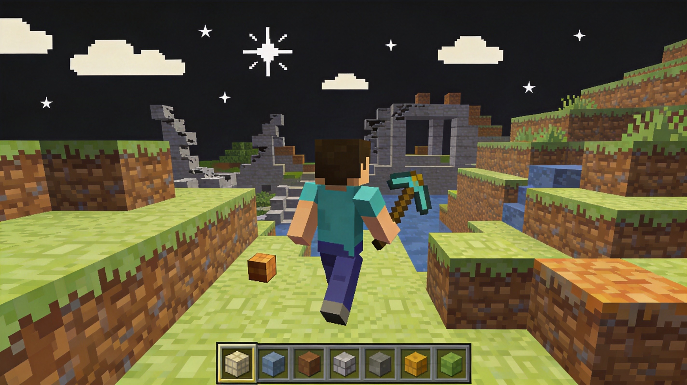
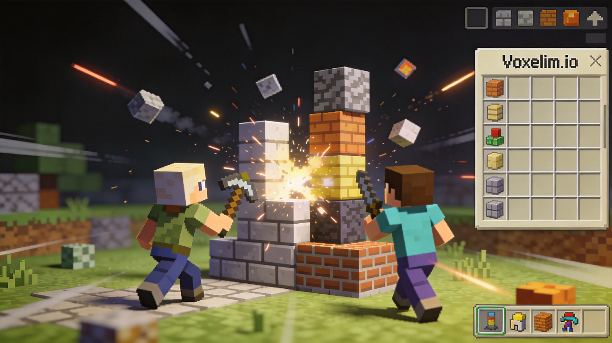

Voxelim.io combines the addictive building mechanics of voxel games with fast-paced multiplayer combat. Whether you're constructing fortifications, crafting weapons, or engaging in PvP battles, Voxelim offers a unique blend of creativity and competition. This guide covers everything you need to dominate the voxel battlefield.
Voxelim.io drops you into a voxel world where your primary goals are survival, building, and combat. The game features resource gathering, crafting, and player-versus-player combat in a blocky, Minecraft-inspired environment.
Objective
Your main objective is to survive and thrive in the voxel arena. This means gathering resources, building structures for defense and strategic advantage, and defeating other players to claim their loot.
Key Mechanics
Voxel Building - Place blocks to create structures
Resource Collection - Gather materials from the environment
Crafting - Create weapons and tools from resources
Combat - Engage other players in battle
🏗️ Building Mechanics

Gameplay and mechanics
Building is the core of Voxelim.io. Your structures serve multiple purposes: defense, strategic positioning, and resource storage.
Building Controls
Left-click to place blocks, right-click to remove them. Your current selected block type determines what you place. Practice switching between block types quickly using the number keys or scroll wheel.
Structural Principles
Strong structures aren't just tall—they're well-supported and defensible. Avoid creating single-tower monuments that are easy to destroy. Instead, build connected structures with multiple entry points that give you escape routes.
🎯 Pro Tip #1
Build underground when possible. Surface structures are visible from afar and become targets. Underground bases offer stealth and protection.
Defensive Structures
When building for defense, focus on multiple layers and controlled chokepoints. A good defensive structure has outer walls, a middle area, and a protected core. This way, if attackers breach one layer, you have fallback positions.
⛏️ Resource Gathering
Essential Resources
Different blocks serve different purposes. Learn what each resource type offers and prioritize gathering the most valuable ones early in the game. Common resources are easy to find; rare resources give you significant advantages.
Resource Locations
Resources are distributed throughout the map, but certain areas are richer than others. Explore the map early to identify resource clusters. Knowing where to find materials gives you an economic advantage over players who wander aimlessly.
Efficient Gathering
Don't waste time gathering low-value resources when high-value ones are available. Calculate the time-to-value ratio: if you can get better resources elsewhere in less time, move there. Efficiency compounds throughout the game.
⚔️ Combat & Weapons
Weapon Types
Voxelim offers various weapons, each with distinct advantages and use cases. Melee weapons are quiet and efficient for close encounters. Ranged weapons let you engage from distance but require ammo management.
Combat Positioning
In Voxelim, positioning matters as much as firepower. Use your environment: fight from high ground when possible, use structures for cover, and avoid open areas where you're exposed.
Building in Combat
Advanced players build during combat to create advantages. Quickly place blocks to create cover, block enemy paths, or build temporary towers for height advantage. This is a skill that separates good players from great ones.
🎯 Pro Tip #2
When taking fire, immediately build a wall between you and the attacker. While they're destroying your wall, you can reposition, heal, or prepare a counterattack.
🛡️ Survival Strategies
Early Game
In early game, focus on gathering resources and establishing a base. Don't engage in unnecessary combat—your priority is survival and resource accumulation. Find a defensible location and start building.
Mid Game
With accumulated resources, upgrade your base and start hunting. Mid-game is when player-versus-player combat becomes more valuable. You have enough resources to sustain losses and enough firepower to take on opponents.
Late Game
Late game is about consolidation and domination. Your base should be fortified, your arsenal stocked. At this point, you're either the hunter or the hunted. Play aggressively but cautiously—big bases attract big threats.

Voxel construction
❓ Frequently Asked Questions
What are the best blocks for building?
Harder blocks resist damage better but may be rarer. Balance defense with availability. Generally, use the strongest blocks available for critical structures and standard blocks for general building.
How do I find rare resources?
Explore the map systematically. Rare resources are typically found in less accessible areas or deeper underground. Some resources only appear in specific biomes or terrain types.
Should I build a base or stay mobile?
Both strategies have merit. Mobile play is safer but offers no base defense. A base provides storage and strategic positioning but requires maintenance. Consider your skill level and playstyle when choosing.
How do I defend my base from raiders?
Multiple layers of defense, trap designs, and strategic positioning help. Also, build decoy structures to draw raiders away from your main base. Watch for approaching players and prepare defenses.
What's the best weapon for beginners?
Start with melee weapons—they're straightforward and don't require ammo. Once comfortable, transition to ranged weapons and learn their mechanics. Each weapon class rewards different skills.
📝 Conclusion
Voxelim.io offers a unique combination of creative building and competitive combat. Master the fundamentals: gather efficiently, build smart, and fight strategically. Whether you prefer defensive play or aggressive raids, the voxel world has something for everyone.
Want more survival and building guides? Check out Mope.io for a different survival experience or Surviv.io for battle royale action.
Last updated: January 29, 2024
Written by the iogameguide.com team
Our Verdict
Voxelim.io brilliantly merges the blocky charm of Minecraft with the twitch-reflex gunplay of Krunker, creating a surprisingly deep voxel battle royale and survival sandbox. While the building and mining mechanics add fantastic tactical layers to the FPS combat, the steep learning curve for movement and inventory management might overwhelm absolute beginners. Still, it remains a top-tier browser shooter for those who crave both creative freedom and sweaty gunfights.
★★★★☆4/5
Similar Games You Might Enjoy
Krunker.io — Fast-paced pixelated FPS with similar movement mechanics and browser-based accessibility.
Venge.io — Another highly polished browser FPS that emphasizes fast movement and competitive multiplayer gunplay.
ZombsRoyale.io — Offers a top-down battle royale experience with building and resource gathering elements.
How It Compares
Game
Difficulty
Learning Curve
Player Base
Best For
Voxelim.io
★★★★☆
Steep
Medium
Tactical builders & FPS fans
Krunker.io
★★★☆☆
Moderate
Large
Fast-paced arcade shooters
Venge.io
★★★☆☆
Easy
Medium
Casual competitive gamers
ZombsRoyale.io
★★☆☆☆
Easy
Medium
Top-down battle royale fans
Common Mistakes New Players Make
Landing in high-tier resource zones without a weapon and getting immediately eliminated by early-game campers. → Always prioritize grabbing a basic melee or low-tier gun from the ground before attempting to mine high-value nodes.
Hoarding too many low-tier materials in your inventory, leaving no room for essential healing items or ammo. → Regularly craft or discard basic wood and stone to keep your inventory slots open for rare loot and survival gear.
Building massive, unfortified wood structures in Survival mode that offer zero tactical cover against snipers. → Use iron or reinforced blocks for the outer walls of your base and always include a small, hidden escape tunnel.
Ignoring the shrinking safe zone in Battle Royale because you are too focused on mining a rare gem deposit. → Keep the map tab open and set a personal alarm to relocate at least two minutes before the zone closes.
Last Updated: August 10, 2026
🎮 Controls & Mechanics Deep Dive
Let’s get into the weeds of how Voxelim.io actually feels under the hood. If you’re coming from standard arena shooters, the movement here is going to feel a bit more grounded, but with a massive emphasis on verticality. You’re using the classic WASD setup for movement, with your mouse handling the camera. Spacebar is your jump, and holding Shift lets you slide or crouch, which is crucial for dodging incoming fire while you frantically try to build a cover wall.
The real magic, however, lies in the building mechanics. By default, right-clicking places a block directly in front of your crosshair, but you can also map specific block types to your number keys for faster switching. The game uses a strict grid-snapping system. This means your hitboxes and collision detection are perfectly aligned with the voxel grid. Unlike some tactical shooters where you can "pixel peek" around a corner, in Voxelim.io, if a voxel is there, it blocks the bullet. Period. This makes corner-holding incredibly rewarding because you know exactly what the enemy can and cannot see.
Movement physics also feature a slight momentum slide when you jump and place a block mid-air, allowing for those sick "bunny hop" building techniques you see the pros using. As for the scoring system, it’s not just about racking up kills. You earn points for every block of enemy infrastructure you destroy, resource nodes you capture, and your overall survival time. Respawn mechanics are kept snappy at a strict three-second timer to ensure you aren't staring at a gray screen while your team gets wiped. It keeps the pacing frantic and forces you to jump right back into the action.
🎯 Game Modes Breakdown
Voxelim.io isn’t just a single chaotic free-for-all; it actually offers a surprisingly robust roster of game modes that completely change how you need to approach the match. Here is a breakdown of what you’ll be dropping into:
Free-For-All (FFA): This is the classic, every-player-for-themselves mode. With up to 16 players on a medium-sized map, the objective is simple: be the last one standing or get the highest score before the timer runs out. It’s pure chaos, and you need to balance scavenging for resources with aggressively taking down anyone who starts building a massive fortress.
Team Deathmatch (TDM): Usually played in 4v4 or 8v8 formats, TDM is where coordination actually matters. The goal is to reach the target kill count first. In this mode, you’ll see players building interconnected bunker systems and sniper nests to cover their teammates. Communication is key here, as a well-placed wall by your buddy can literally save your life.
Build & Battle: If you want to flex your architectural skills without getting shot in the back of the head, this is the mode for you. There is zero combat. Players are given a set amount of time and a massive resource pool to build the most impressive voxel structures. It’s judged either by an AI scoring system based on volume and complexity, or by peer voting at the end of the round.
Voxel Survival (Battle Royale): The ultimate test of endurance. Up to 30 players drop onto a massive map with a slowly shrinking safe zone. You start with nothing and have to mine the environment for weapons and rare building materials. The endgame in this mode is intense, as players are forced into tight spaces, turning the final circles into a terrifying game of high-speed block placement and close-quarters shotgun battles.
🚀 Advanced Strategies & Pro Tips
Once you’ve got the basic controls down and know your way around the game modes, it’s time to separate yourself from the casuals. Here are some advanced, pro-level strategies that will help you dominate the leaderboard.
The "Jenga" Trap: This is one of the most satisfying counterplay tactics in the game. When you’re building a defensive tower, don't just stack solid titanium blocks all the way up. Build the base out of cheap, weak materials like dirt or wood, and save your high-tier blocks for the top. When an enemy tries to scale your wall or shoot through it, you can easily blow out the weak foundation, collapsing the entire structure on top of them.
Audio Whoring: Seriously, turn your game volume up. Every time a player places or breaks a block, it emits a distinct sound. Because sound travels through the voxel grid in a somewhat realistic way, you can actually track enemy movements through walls. If you hear rapid block placement to your left, pre-aim that corner and wait for them to peek.
Resource Baiting: Never blow your entire inventory of rare materials (like obsidian or steel) on a single wall. Always keep a stack of cheap blocks in your quick-select slots. If you get pushed, throw up a cheap wooden wall to stall for a second, then flank around it. Save the heavy armor for your actual sniper nest or final defensive position.
Pre-Building and Crosshair Placement: Never peek a corner without already having a block in your hand. The moment you swing around a corner, instantly place a block to cover your body, then peek over it. This minimizes your exposure time to literally a fraction of a second. Combine this with keeping your crosshair at head-height at all times, and you’ll win almost every 1v1 engagement.
❓ Frequently Asked Questions
Is Voxelim.io completely free to play?
Yes! Like most .io games, Voxelim.io is 100% free to play directly in your web browser. There are no pay-to-win mechanics. You can optionally purchase cosmetic skins for your character and custom block textures, but these give absolutely zero competitive advantage.
Can I play Voxelim.io on my phone or tablet?
Technically, yes, the game is optimized to run on mobile browsers. However, I’d highly recommend playing on a PC or laptop. The game relies heavily on precise mouse aiming and rapid keyboard inputs for block placement. Trying to execute a quick-build maneuver on a touchscreen is incredibly frustrating and will put you at a massive disadvantage.
How do I play with my friends?
You can easily set up a private lobby. Just click the "Custom Game" button on the main menu, create a room, and share the 4-letter room code with your friends. You can also tweak the settings in private lobbies, like turning off friendly fire, changing the resource spawn rates, or adjusting the map size.
What are the system requirements to run the game smoothly?
Because it’s a browser-based voxel game, it’s surprisingly lightweight. You don’t need a gaming rig to run it. Any modern computer from the last five years with a decent dual-core processor and 4GB of RAM will handle it fine. The most important factor is having a stable internet connection, as latency will ruin your building speed and aim.
How do I rank up and unlock new cosmetics?
You earn XP at the end of every match based on your performance—kills, blocks placed, blocks destroyed, and match wins all contribute to your total. As you level up your global profile, you’ll unlock new tiers of cosmetics. There’s also a daily challenge system that gives you bonus XP for completing specific tasks, like "Destroy 50 enemy blocks" or "Win 3 matches without dying."